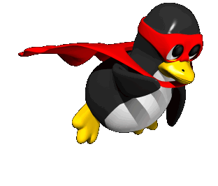

I love using Linux & C++!Shaarim Alam
Fullstack Developer · Systems Enthusiast · Creative Coder
💾 // System Specifications & Who I Am
- 🎓 Academics: Diploma Year 2 in Computer Science & Engineering @ Netaji Subhas University (2024–2027)
- 📍 Coordinates: Jamshedpur, Jharkhand, India (22.8046° N, 86.2029° E)
- 🖥️ Operating Systems: Arch Linux, Windows 11
- 💻 Editors & Environment: VS Code, Neovim, zsh
- 🌐 Primary Stack: MERN (MongoDB, Express, React, Node.js), C++20, Three.js / WebGL, Lua 5.4, GSAP 3
📂 // Selected Software & Projects
Lightweight desktop audio client written in C++20 for instant < 1.8ms startup. Integrates yt-dlp multithreaded caching pipeline and direct 44.1kHz Hi-Fi DAC audio stream synchronization with a neon terminal HUD.
Full-stack bi-directional communication platform featuring grouped channels, direct messaging, live media transfers, and reactions with optimistic state persistence.
Hardware-accelerated WebGL playground running custom GLSL fragment shaders, inertia-driven physics simulations, and fluid spatial particle systems.

"Hi! It looks like you're exploring Shaarim's cyberspace profile. Would you like to star a repository?"